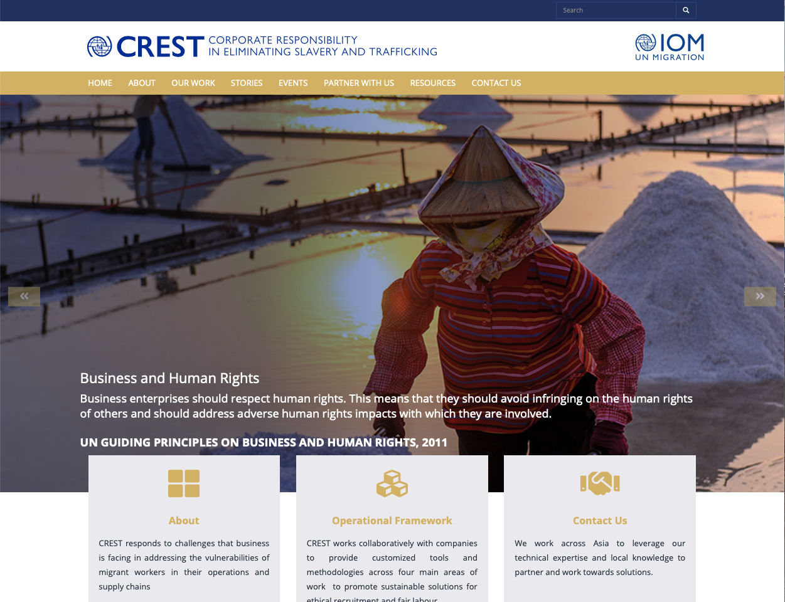
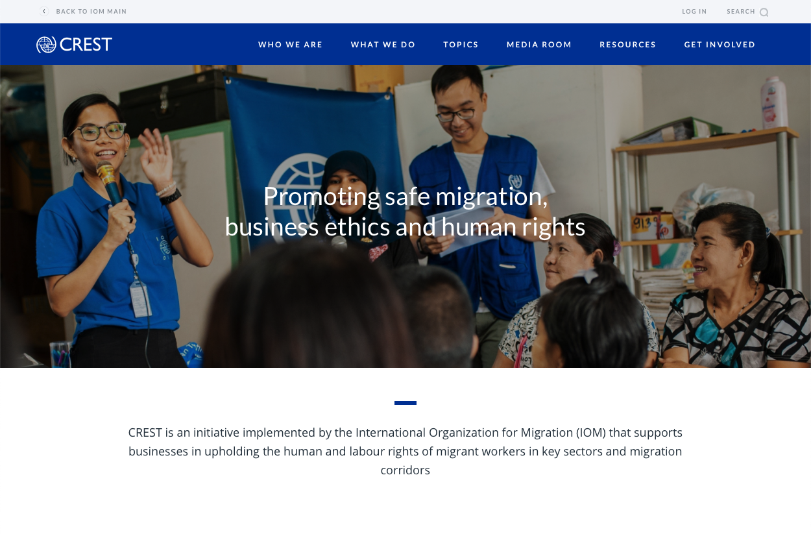
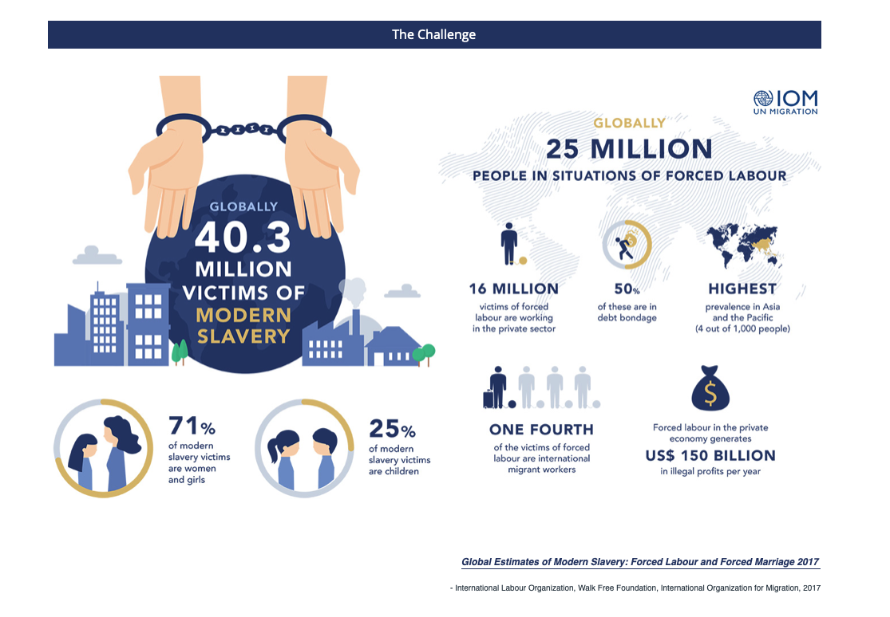
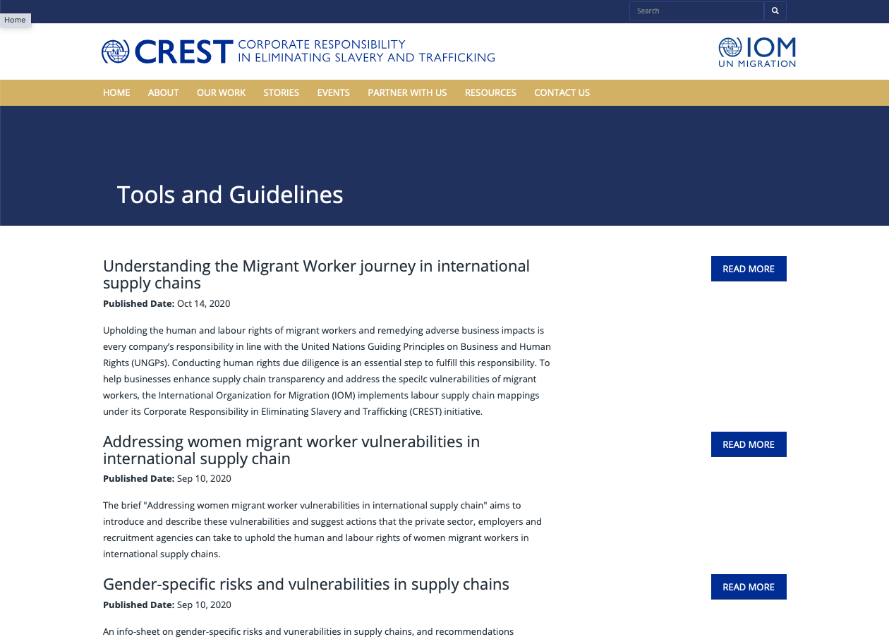
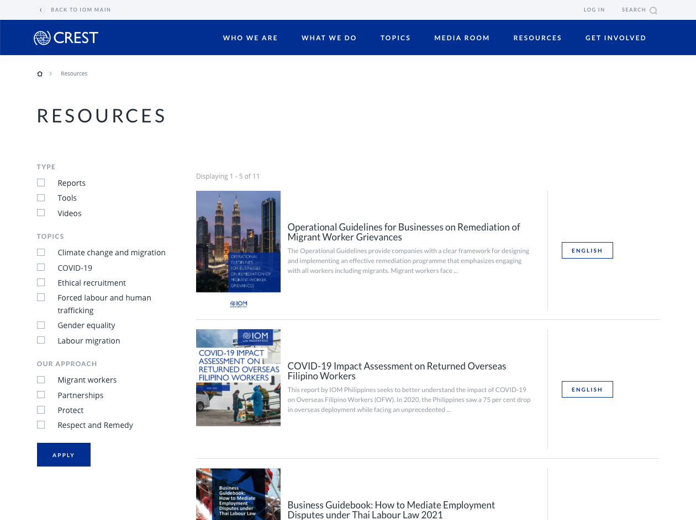
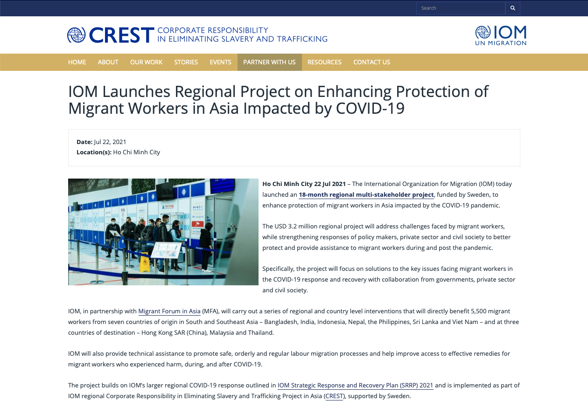
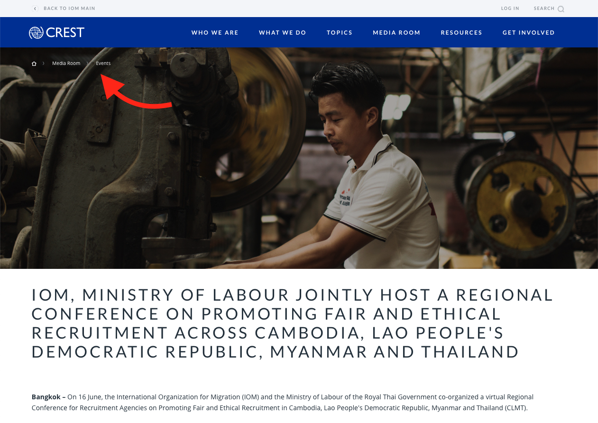

- Client:
- Visit live:
- IOM Vietnam
- crest.iom.int
Info about the project
3 UX upgrades on the new CREST site
- Client:
- Visit live:
- IOM Vietnam
- crest.iom.int
Info about the project
*They is used as a singular pronoun.
What is a design system?
Design systems is a living document that help organisations keep their communications look as consistent as possible. And it goes beyond just branding guidelines.
It usually defines things like the buttons' colours, shapes, dimensions, and spacing, as well as fonts, and even entire elements such as footers and headers.
I personally love projects with design systems defined. Why? Because they leave space to address important factors such as usability.
Let's have a look at the top 3 improvements we've made on the new CREST site.
Carousel
There is a chance that you'll find this mistake on your home page right now.
Steve Krug in his book Don't Make Me Think! explains the challenge with home pages:
"Everybody wants a piece of it. [...] Everybody who has a stake in the site wants a promo or a link to their section on the Home page, and the turf battles for Home page visibility can be fierce." (Krug, 2006, p. 97)
The same is especially true for the above-the-fold area of websites — what we see right when we open one. To address this issue, many CSO websites opt to display a carousel (auto-advancing slideshow) which in theory, will maximise the real estate available.
Unfortunately, the users even after a decade of this feature existing still don't know their way around it.
It's best to completely avoid it and take complete control over what people see on the home page.


Infographics
Put your pitchforks away —
I'm not criticising infographics. Designed right, they're a great way to illustrate complex data.
However, when they're a part of a website, they usually fail at two tasks:
- be accessible for people using assistive technologies, and
- be readable for people on small screens (mobile devices).
If you want to show infographics on your website, the best way would be to get them properly coded into interactable visualisations. Be careful though — this can dramatically increase the overall cost of the project and its complexity!
Unless infographics add huge additional value to your website's content, it's probably best to keep them in printed media.

Resources
A very common segment of an organisational website is a page where all of the research, guidelines, and learning materials are available.
The resources page serve a number of different audience segments, and so it's crucial to keep the UX universal and robust. A common feature are filters, but NGOs also use categories and subpages to organise their content.


The pdf format is not the best for use online due to its unresponsiveness and limited accessibility. If you decide to offer them on your site anyway, make sure to utilise the so-called "gateway pages".
Bonus: Breadcrumbs
That chain of links at the top of the page? Us usability nerds call that "breadcrumbs".
Introducing breadcrumbs is usually a very easy usability fix but it's only suitable for mid-sized to large websites.
They give you some information about where on the website you are and offer an easy way to go one or a few levels up.


@AskPun